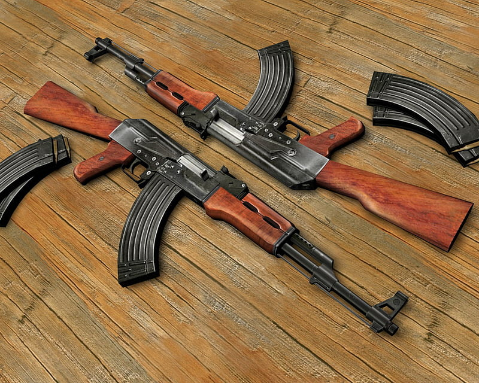

The AK-47 is arguably the most famous and widely produced firearm in the world. Designed by Mikhail Kalashnikov in the late 1940s, it became the standard-issue rifle for the Soviet Union and dozens of other nations due to its legendary reliability in extreme conditions. Its simple design and ease of maintenance have allowed it to remain a dominant force on the global stage for over three-quarters of a century.
| Feature | Standard AK-47 |
|---|---|
| Type | Gas-operated, rotating bolt assault rifle |
| Caliber | 7.62x39mm |
| Capacity | 30 rounds (standard detachable box magazine) |
| Barrel | Length 16.3 inches (415 mm) |
| Weight | ~7.7 lbs (3.47 kg) unloaded |
| Sights | Adjustable iron sights, front post and rear notch |